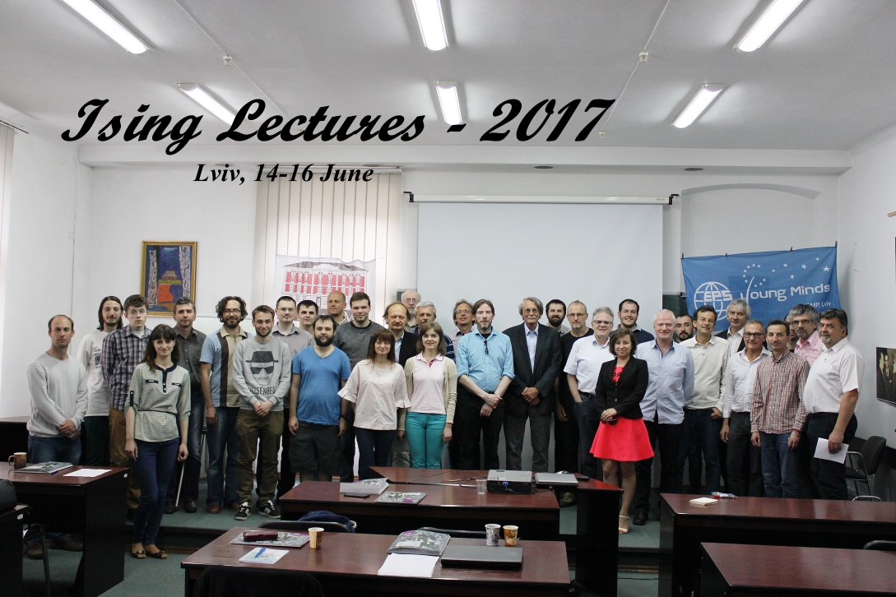

ISING LECTURES-2017
20th Annual Workshop
on Phase Transitions and Critical Phenomena
Lviv, Ukraine, June 14-16, 2017

Wednesday, 14.06
| 1430-1600 | Bertrand BERCHE
(University of Lorraine, Nancy, France) GEOMETRY, PHYSICS, FREEDOM... THE WORLD OF CONNECTIONS |
| 1630-1800 |
Ralph KENNA
(Coventry University, Coventry, United Kingdom) THE SEARCH FOR UNIVERSALITY IN FINITE-SIZE SCALING OF PERCOLATION THEORY IN HIGH DIMENSIONS |
Thursday, 15.06
| 1430-1600 | Yuri Kozitsky (Maria Curie-Skłodowska University, Lublin, Poland) CELL DIVISION DYNAMICS WITH APPLICATIONS TO TUMOR GROWTH |
| 1700-1830 | Reinhard Folk (Johannes Kepler University, Linz, Austria) THE COURSE OF THE WORLD AND THE COURSE OF CLOCKS |
Friday, 16.06
| 1500-1630 | Ihor Mryglod
(Institute for Condensed Matter Physics, Lviv, Ukraine) SOME OLD AND NEW PUZZLES IN THE DYNAMICS OF FLUIDS |
Download schedule pdf
The workshop will take place in:
Conference Hall
Institute for Condensed Matter Physics
Lviv, 1 Svientsitskii Street
Ukraine
Ising lectures 2017 are supported in part by the FP7 IRSES projects DIONICOS, STREVCOMS and by the program "LVIV SCIENTIFIC".